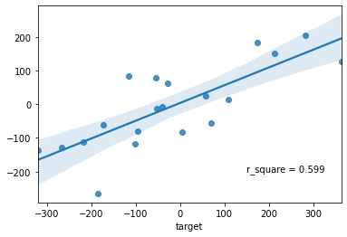
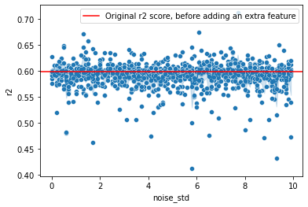

Looking at how adding an extra feature with varying levels of relevance effects the r2_score¶
[1]:
import pandas as pd
import numpy as np
import matplotlib.pyplot as plt
import seaborn as sns
from sklearn.linear_model import LinearRegression
from sklearn.metrics import mean_squared_error, r2_score
from sklearn.datasets import make_regression
from sklearn.model_selection import train_test_split
[2]:
X, y, coef = make_regression(n_samples=100,
n_features=10,
n_informative=5,
n_targets=1,
bias=0.0,
effective_rank=None,
tail_strength=0.5,
noise=100,
shuffle=True,
coef=True,
random_state=42)
[3]:
pd.DataFrame(coef, index=[f"feat_{x}" for x in range(0, coef.shape[0])]).T
[3]:
| feat_0 | feat_1 | feat_2 | feat_3 | feat_4 | feat_5 | feat_6 | feat_7 | feat_8 | feat_9 | |
|---|---|---|---|---|---|---|---|---|---|---|
| 0 | 16.748258 | 0.0 | 0.0 | 63.643025 | 0.0 | 70.647573 | 0.0 | 10.456784 | 3.158614 | 0.0 |
[4]:
df = (pd.DataFrame(X, columns=[f"feat_{x}" for x in range(0, X.shape[1])])
.merge(pd.DataFrame(y, columns=["target"]),
left_index=True,
right_index=True))
[5]:
df.head()
[5]:
| feat_0 | feat_1 | feat_2 | feat_3 | feat_4 | feat_5 | feat_6 | feat_7 | feat_8 | feat_9 | target | |
|---|---|---|---|---|---|---|---|---|---|---|---|
| 0 | -0.926930 | -1.430141 | 1.632411 | -3.241267 | -1.247783 | -1.024388 | 0.130741 | -0.059525 | -0.252568 | -0.440044 | -186.494628 |
| 1 | 0.202923 | 0.334457 | 0.285865 | 1.547505 | -0.387702 | 1.795878 | 2.010205 | -1.515744 | -0.612789 | 0.658544 | 191.976107 |
| 2 | -0.241236 | 0.456753 | 0.342725 | -1.251539 | 1.117296 | 1.443765 | 0.447709 | 0.352055 | -0.082151 | 0.569767 | 315.503594 |
| 3 | 0.289775 | -1.008086 | -2.038125 | 0.871125 | -0.408075 | -0.326024 | -0.351513 | 2.075401 | 1.201214 | -1.870792 | 100.185659 |
| 4 | -0.007973 | -0.190339 | -1.037246 | 0.077368 | 0.538910 | -0.861284 | -1.382800 | 1.479944 | 1.523124 | -0.875618 | -40.813080 |
It is interesting to see how choosing a feature with a high coefficient vs one with a coefficient of 0 effects the outcome¶
[6]:
edit_feature = "feat_5"
[7]:
new_feat_df = df[[edit_feature]]
[8]:
## Create
[9]:
np.random.seed(42)
for i in np.arange(0.1, 100, 0.1):
new_feat_df[f"extra_feat_{round(i, 2)}"] = new_feat_df[[edit_feature]].add(np.random.normal(0,i,100).reshape(-1, 1))
<ipython-input-9-15ece02a7e91>:3: SettingWithCopyWarning:
A value is trying to be set on a copy of a slice from a DataFrame.
Try using .loc[row_indexer,col_indexer] = value instead
See the caveats in the documentation: https://pandas.pydata.org/pandas-docs/stable/user_guide/indexing.html#returning-a-view-versus-a-copy
new_feat_df[f"extra_feat_{round(i, 2)}"] = new_feat_df[[edit_feature]].add(np.random.normal(0,i,100).reshape(-1, 1))
[10]:
new_feat_df.head()
[10]:
| feat_5 | extra_feat_0.1 | extra_feat_0.2 | extra_feat_0.3 | extra_feat_0.4 | extra_feat_0.5 | extra_feat_0.6 | extra_feat_0.7 | extra_feat_0.8 | extra_feat_0.9 | ... | extra_feat_99.0 | extra_feat_99.1 | extra_feat_99.2 | extra_feat_99.3 | extra_feat_99.4 | extra_feat_99.5 | extra_feat_99.6 | extra_feat_99.7 | extra_feat_99.8 | extra_feat_99.9 | |
|---|---|---|---|---|---|---|---|---|---|---|---|---|---|---|---|---|---|---|---|---|---|
| 0 | -1.024388 | -0.974716 | -1.307462 | -0.917051 | -1.355986 | -1.821601 | -0.468681 | -0.494496 | -1.442566 | -0.179932 | ... | -16.004939 | 133.364347 | -58.934818 | 116.415540 | 124.949513 | 10.956874 | 152.970119 | -61.107173 | -140.130109 | 9.020166 |
| 1 | 1.795878 | 1.782051 | 1.711749 | 1.964113 | 1.571805 | 1.496190 | 2.941528 | 1.150362 | 2.635085 | 1.331437 | ... | 122.317131 | -51.718905 | 72.445362 | -19.581405 | -24.721140 | 19.987382 | -32.259533 | 32.857998 | -53.048834 | -12.343040 |
| 2 | 1.443765 | 1.508533 | 1.375222 | 1.768680 | 1.742682 | 1.446386 | 0.604624 | 2.052489 | 0.880290 | 1.530273 | ... | -29.645214 | -1.617802 | -15.752390 | 62.461780 | -33.942097 | 34.128823 | 94.635425 | -103.690008 | 73.000333 | -119.124344 |
| 3 | -0.326024 | -0.173721 | -0.486479 | -0.009883 | -0.081875 | -0.302533 | 0.011758 | 0.622923 | -1.452793 | -0.742071 | ... | 7.551026 | -92.430132 | 41.112141 | 31.240235 | 17.735043 | 210.924356 | 51.918244 | 0.612539 | 39.567114 | -123.228660 |
| 4 | -0.861284 | -0.884700 | -0.893541 | -1.274585 | -0.869645 | -1.086317 | -1.251670 | -0.571880 | -2.106588 | -1.252331 | ... | -24.106935 | -5.330764 | 82.459494 | 54.121763 | 7.279049 | 153.839735 | -196.280966 | 159.187931 | 27.495354 | 19.974685 |
5 rows × 1000 columns
Show the fit and r2-score of the original data frame without the extra noise based feature¶
[11]:
X = df.filter(regex="feat")
y = df["target"]
[12]:
X_train, X_test, y_train, y_test = train_test_split(X, y, test_size=0.2, random_state=42)
[13]:
model = LinearRegression()
[14]:
_ = model.fit(X_train, y_train)
[15]:
y_pred = model.predict(X_test)
[16]:
_ = sns.regplot(x=y_test, y=y_pred)
_ = plt.text(x=150, y=-200, s=f"r_square = {round(r2_score(y_test, y_pred), 3)}")

[17]:
original_r2_score = r2_score(y_test, y_pred)
Run the same regression as above but with a different noise feature added each time¶
(thus seeing how adding a different feature with more or less noise effects the r2 score of the model)
[18]:
noise_features_list = new_feat_df.drop(edit_feature, axis=1).columns.tolist()
[19]:
all_r2_df = pd.DataFrame()
for noise_feat in noise_features_list:
X = df.filter(regex="feat")
X = pd.concat([X, new_feat_df[[noise_feat]]], axis=1)
y = df["target"]
X_train, X_test, y_train, y_test = train_test_split(X, y, test_size=0.2, random_state=42)
model = LinearRegression()
_ = model.fit(X_train, y_train)
y_pred = model.predict(X_test)
current_r2_df = pd.DataFrame({"added_feature": noise_feat,
"noise_std": float(noise_feat[-3:]),
"r2": r2_score(y_test, y_pred)}, index=[0])
all_r2_df = pd.concat([all_r2_df, current_r2_df])
Show an example of one of the X’s to compare to the initial data frame used to get the initial r2 score shown above in the scatter plot¶
[20]:
df.filter(regex="feat").head(1)
[20]:
| feat_0 | feat_1 | feat_2 | feat_3 | feat_4 | feat_5 | feat_6 | feat_7 | feat_8 | feat_9 | |
|---|---|---|---|---|---|---|---|---|---|---|
| 0 | -0.92693 | -1.430141 | 1.632411 | -3.241267 | -1.247783 | -1.024388 | 0.130741 | -0.059525 | -0.252568 | -0.440044 |
[21]:
X.head(1)
[21]:
| feat_0 | feat_1 | feat_2 | feat_3 | feat_4 | feat_5 | feat_6 | feat_7 | feat_8 | feat_9 | extra_feat_99.9 | |
|---|---|---|---|---|---|---|---|---|---|---|---|
| 0 | -0.92693 | -1.430141 | 1.632411 | -3.241267 | -1.247783 | -1.024388 | 0.130741 | -0.059525 | -0.252568 | -0.440044 | 9.020166 |
Plot all the r2 scores¶
[22]:
_ = sns.scatterplot(data=all_r2_df, x="noise_std", y="r2")
_ = sns.lineplot(data=all_r2_df, x="noise_std", y="r2")
_ = plt.axhline(y=original_r2_score, c="red", label="Original r2 score, before adding an extra feature")
_ = plt.legend()

Initial multiple choice question:¶
Adding a non-important feature to a linear regression model may result in: 1. Increase in R-square 2. Decrease in R-square
Answer: Only 1 is correct